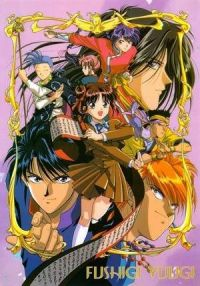

Fushigi Yuugi
While visiting the National Library, Miaka Yuuki and Yui Hongo are transported to the world of a book set in ancient China, "The Universe of The Four Gods". Miaka finds herself the prietess of the god Suzaku. Her mission is to find all seven of her celestial warriors, summon Suzaku, and make three wishes. However, her friend Yui has been manipulated by an enemy nation and made the priestess of Seiryuu with the same mission.